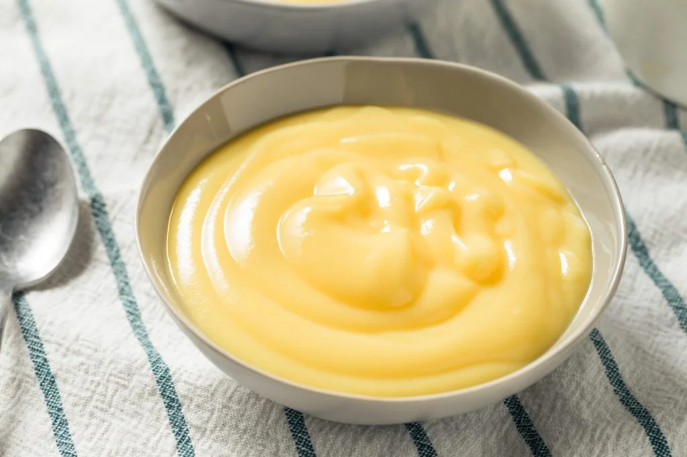

Custard
Welcome to the guide for making custard! Custard is one of those classic
desserts that never go out of style, smooth, creamy, and endlessly
comforting. Whether it’s a chilled bowl of fruit custard on a summer
afternoon or a warm, baked caramel custard after dinner, this simple milk
and egg based dessert always hits the sweet spot.

Ingredients
- 700ml whole milk
- 200ml double cream
- 100g caster sugar
- 4 large egg yolks
- 3 tbsp cornflour
- 1 tsp vanilla extract
Instructions
-
Place the milk and cream in a saucepan and gently bring the mixture to
just below boiling point.
-
In a separate bowl, whisk together the egg yolks, sugar, cornflour, and
vanilla extract until they form a smooth paste.
-
Gradually pour the hot milk mixture into the egg mixture while whisking
constantly to prevent the eggs from scrambling. This slowly raises the
temperature of the eggs.
-
Pour the combined mixture back into the saucepan. Heat gently over a low
heat, stirring constantly with a wooden spoon until the custard
thickens. Do not let it boil.
-
Serve the custard hot or cold. If chilling, cover the surface directly
with baking parchment or plastic wrap to prevent a skin from forming.